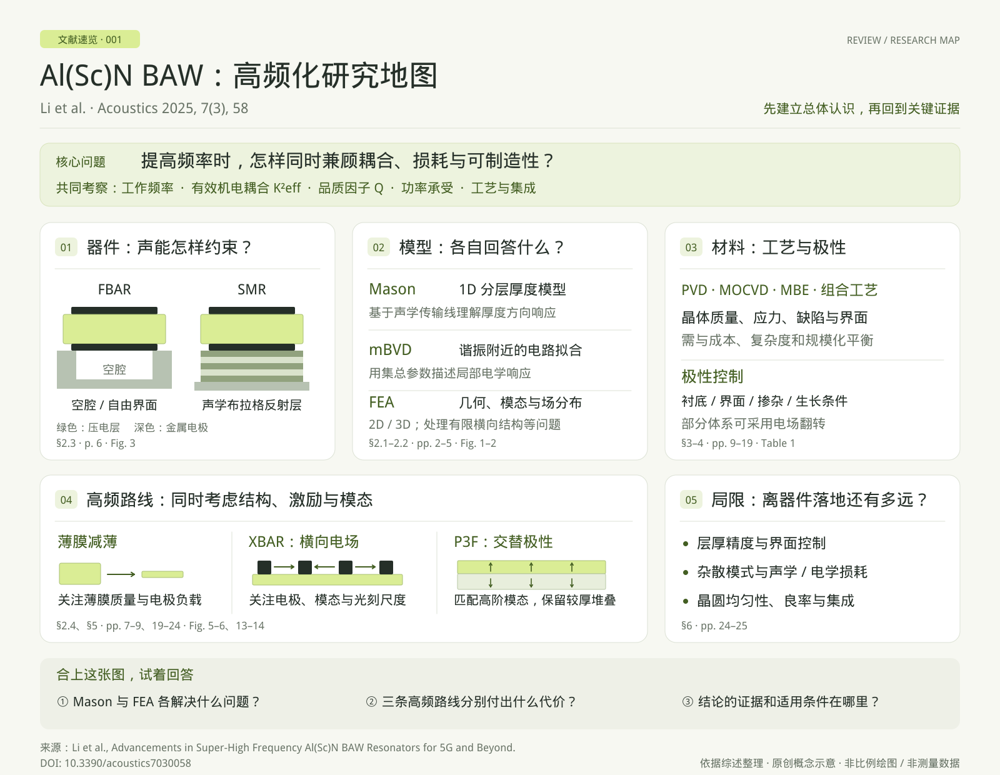

01 / P3F
周期性极化压电薄膜
Periodically Poled Piezoelectric Film
通过配置压电层的极化或晶体取向，使机电激励更好地匹配目标高阶声学模态。AlScN 与铌酸锂（LiNbO3）平台已有谐振器及滤波器实验报道。部分 AlScN 文献也使用 Periodically Polarized 的写法。[1][2]
极化与层叠设计高阶声学模态高频滤波原型
关注周期性极化压电薄膜（P3F）与压电 BAW 滤波器。
在这里整理公开文献，了解领域进展与研究问题。
整理
以下介绍关注方向中的代表性公开研究，结果归属于所引用论文的作者。这里呈现领域进展与学习线索，不作为我的个人研究成果或进度。
Periodically Poled Piezoelectric Film
通过配置压电层的极化或晶体取向，使机电激励更好地匹配目标高阶声学模态。AlScN 与铌酸锂（LiNbO3）平台已有谐振器及滤波器实验报道。部分 AlScN 文献也使用 Periodically Polarized 的写法。[1][2]
Piezoelectric Bulk Acoustic Wave Filters
利用压电薄膜中的体声波谐振实现射频频率选择。这里主要关注 AlN / ScAlN 薄膜路线：FBAR 借助空气腔体隔离声能，SMR 借助声学反射层限制声能泄漏。材料、薄膜质量与电极设计共同影响耦合和损耗。[11]
Cho 等使用 ScAlN 薄膜与 Pt 底电极实现 12.5 GHz 谐振器，并报告 Q 为 208、耦合系数 k² 为 9.5%，为高频薄膜与电极协同设计提供实验案例。[5]
已发表的单层 ScAlN 梯形滤波器，在 50 Ω 测量下获得 4.0% 的 3 dB 相对带宽与 6.8 dB 最小插入损耗。论文分析材料、电极、频差与残余应力带来的高频化限制。[6]
Wang 等将 ScAlN / Pt 堆栈置于 SiO2 / Ta2O5 布拉格反射器上，实现三阶厚度伸缩模式的 SMR。该结果对应单个谐振器的实测响应。[7]
提高工作频率时，怎样同时保持薄膜晶质、降低电极损耗并控制残余应力？从单个谐振器走向滤波电路，还需要考虑串并联谐振器频差、端口匹配与带宽。[6]
AlScN 与 ScAlN 均表示钪掺杂氮化铝，页面沿用各论文的写法；不同研究的 Q、耦合系数和滤波指标，应结合原文定义及测量条件阅读。
近期公开探索还包括双层 LiNbO3 的厚度剪切泛音谐振器，用于研究亚 GHz / 低 GHz 频段的高 Q 模态。这是一项谐振器实验，当前公开版本为预印本。[10]
按本文引用顺序编号；期刊年份按正式卷期或公开发表状态列出，arXiv 链接用于阅读作者公开稿。文献选择截至 ，为代表性梳理。
欢迎交流文献、研究问题与学习心得。联系交流
01 篇导读卡 · 持续补充
用一张图找回研究主线，再回到关键图表与原文。也可以先回答几个问题，检查自己记住了什么。

本区为文献学习导读。论文结果归原作者，卡片覆盖范围不等同于个人精读进度。
你好，我是 Ethan，一名博士研究生，关注周期性极化压电薄膜（P3F）与压电 BAW 滤波器。
这个主页围绕上述方向整理公开文献与领域研究现状，作为学习和交流的入口。欢迎分享相关论文、阅读心得与研究问题。
点击卡片，体验三个网页示例。
调整层厚、极化与模态阶数，观察空间重叠的增强与抵消。
用几条简单的轨迹，试着表达秩序、运动和一点点偶然。
给零散的想法留一个位置。在下一次动手之前，先把好奇记下来。
以上为网页交互示例，不代表 P3F 或 BAW 研究成果。P3F 为理想化一维教学模型，轨道为几何动画，笔记为示例文字。
如果你也关注 P3F 或压电 BAW 滤波器，欢迎分享论文、学习心得与合作想法。